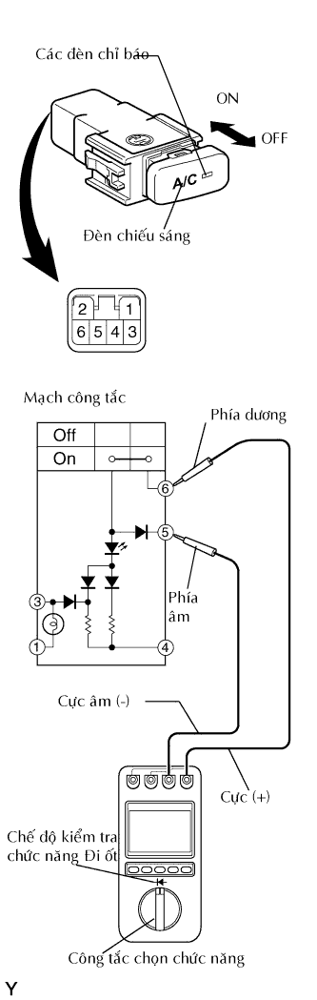

CÔNG TẮC ĐIỀU HOÀ KHÔNG KHÍ > KIỂM TRA |
| 1. KIỂM TRA CÔNG TẮC ĐIỀU HOÀ |
|  |
Dùng đồng hồ đo điện, kiểm tra xem các điốt có hoạt động đúng chức năng không.
Hãy đặt công tắc chọn chức năng và chế độ kiểm tra đi ốt và kiểm tra rằng các điốt đang hoạt động bình thường.
| Nối dụng cụ đo | Tình trạng công tắc | Điều kiện tiêu chuẩn |
| Phía cực dương (+) → Cực 6 Phía cực âm (-) → Cực 5 | ON | 0.4 đến 0.8 V |
| OFF | Giống như giá trị ban đầu* |
Cấp điện áp dương ắc quy vào giắc công tắc và kiểm tra rằng đén chỉ báo sáng lên.
| Nối dụng cụ đo | Tình trạng công tắc | Điều kiện tiêu chuẩn |
| Cực dương ắc quy (+) → Cực 6 Cực âm ắc quy (-) → Cực 4 | ON | Đèn báo sáng lên |
| OFF | Đèn chỉ báo không sáng |
Cấp điện áp dương ắc quy vào giắc công tắc và kiểm tra rằng đén báo sáng lên.
| Nối dụng cụ đo | Điều kiện tiêu chuẩn |
| Cực dương ắc quy (+) → Cực 3 Cực âm ắc quy (-) → Cực 1 | Đèn báo sáng lên |